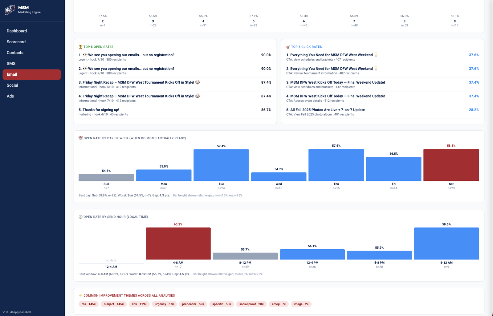
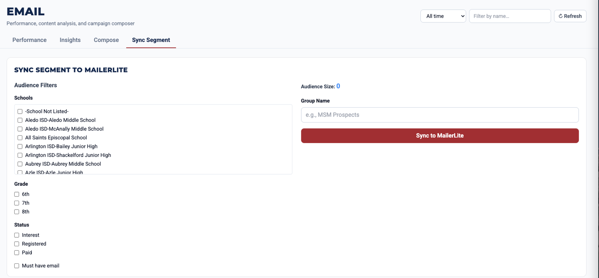
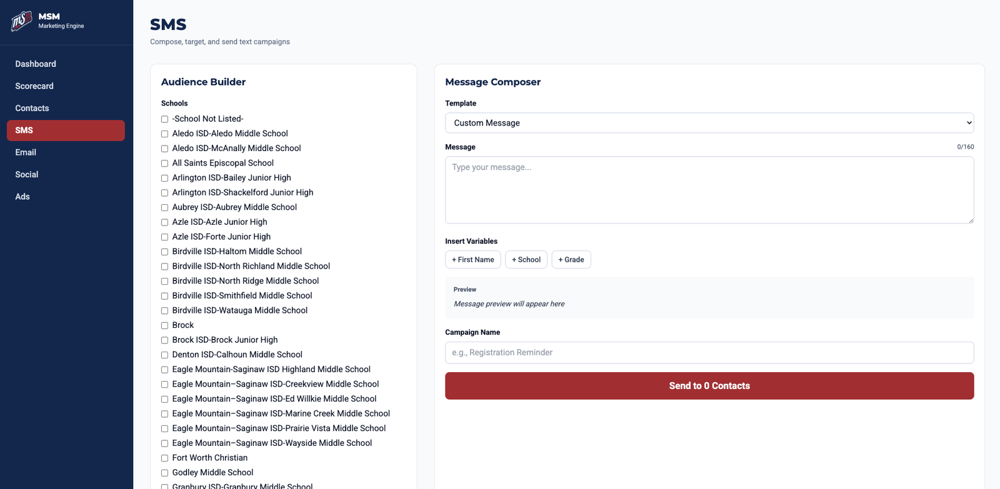
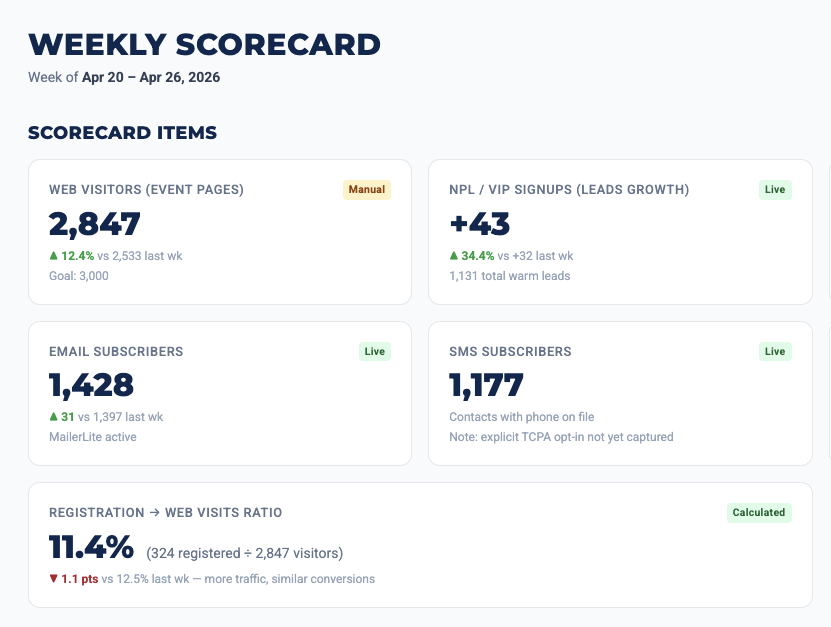
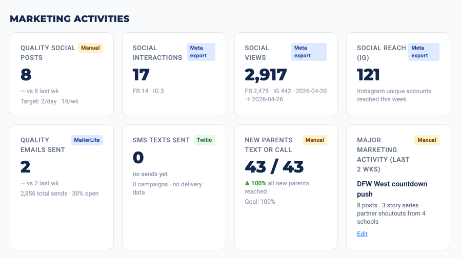

MSM Marketing Engine
A one-operator marketing OS for a youth-baseball franchise — contact management, email + SMS, AI campaign planning, branded image generation, and live tournament-day ops, all running on a phone in a dugout. Built to replace an 8-tool SaaS stack.

One operator. Hundreds of families. A two-day tournament where everything has to go right.
Middle School Matchup (MSM) — DFW West franchise. A youth-baseball tournament organizer serving families across the Dallas–Fort Worth metroplex. One operator, a 5-week build-up window, and a two-day tournament where everything has to go right.
8 SaaS tools, $300–$700/month, and 15–25 hours a week of gluing them together.
The operator was running on a stitched-together stack: MailerLite for email, Twilio for SMS, Stripe for payments, Google Sheets for rosters, MailerLite again for segmentation, manual screenshots into Canva for social posts, Xero for accounting, and a notebook for everything in between.
Worse, the operator's spouse — a busy mom of three — needed to be able to run the platform from a phone in a dugout. Existing tools didn't make that possible. So they called us.
A single phone-first platform deployed at msm.burnsbuilt.co.
FastAPI + SQLite, no framework on the frontend, deployed to a custom subdomain. The platform replaces the entire stack:
- Contact CRM with intent scoring, custom audience segmentation, and SMS opt-out compliance (A2P 10DLC ready).
- Scorecard dashboard with live Stripe revenue, MailerLite engagement, expected franchise fees, cash on hand, and rolling 7-day metrics.
- AI Campaign Autopilot — Claude weekly proposes the 2–3 highest-leverage campaigns to run, picks the audience, drafts the body, queues for one-click approval.
- One-shot drafter — operator types "send a deadline reminder to grade 7 families" → AI picks the audience, writes the copy, drafts the campaign.
- Tournament-Day field experience — three big-button command center (📣 Announce · 📸 Social Post · 🚨 Emergency), live game ticker, mobile-first, designed to be operable with sticky hands and direct sunlight.
- Branded image generation via Nano Banana, trained on the client's brand DNA using on-brand reference photos and "anti-pattern" image analysis. Operator can pick a real photo as a base; the model preserves the subjects and adds brand elements.
- AI photo auto-tagger using BLIP + CLIP, so hundreds of game photos become searchable by tag (batting, celebration, golden-hour) and filterable for privacy.
- Voice memo intake — operator dictates a 90-second update on the drive home, Gemini transcribes, Claude extracts a structured action list.
- Expense ingest — drag a bank statement PDF in, Gemini categorizes every line item, ready to push to Xero.
- "Ask MSM" conversational agent — plain-English questions over the database via Claude tool-use. No SQL required.
What the operator actually uses every day.
Composite AI Score per campaign
Every past campaign gets a 1–100 score blending open rate (40%), click rate (20%), hook strength (20%), and audience fit (20%) — percentile-ranked across the full history. Both Anthropic and Gemini analyses surfaced side by side so disagreements are visible, not hidden.
Dual-LLM ensemble drafting
Every email goes to Claude Sonnet and Gemini Flash in parallel, scored against a heuristic rubric (subject length, emoji density, urgency-word penalty, single-CTA bonus). The higher-scoring draft wins; the alternate is one click away. The operator sees both rationales and picks.
"What should I send this week?"
The Suggested Composer reviews current registration state, top historical winners, and known pitfalls — then proposes 3 prescriptive campaigns with priority, audience, subject, body outline, and rationale. The decision the operator was making by gut, made by the system that has the data.
One-shot drafting
Free-form: "Tomorrow morning, last call for 6th graders who haven't registered." The system picks the right audience preset, writes the topic and goal, drafts the email with both LLMs, and reveals the MailerLite push panel. Idea to sent: ~30 seconds.
Day-of-week and hour-of-day analysis
Send-time performance derived from actual campaign history — not "best practices" or vendor recommendations. The bars show what's worked for this audience, not what worked for someone else's mailing list two years ago.
Background sync, never blocked
MailerLite syncs run as background jobs with an in-memory ledger and polled progress UI. The operator keeps working while a 1,000-contact upload finishes — never frozen, never wondering if it's still running.
Empirically routed LLMs. Brand-trained image gen. Compliance built in.
- Hybrid LLM routing — empirically validated. We routed each AI workload to the right model based on actual data: Claude Sonnet 4.6 for drafting and planning where reasoning matters, Gemini 2.5 Flash for classification, lint, vision, and short structured output (~10× cheaper). When asked which model was more predictive of email performance, we ran the numbers across 126 sent campaigns — neither pre-send hook score correlated meaningfully with actual open rate (r = +0.045 vs +0.003). A single switch — turning off Claude for campaign analysis — saved $13–$35/month with zero quality loss. Decisions like this should be made with data, not vibes.
- AI-trained-on-brand image generation. Two-folder reference pipeline: on-brand photos sent as style-conditioning to every image call; off-brand images analyzed once by Gemini Vision to produce text-based "avoid this" rules injected as negative guidance. Drop photos in folders, hit Refresh — every image generation embeds the client's actual visual identity. No fine-tuning, no training data licensing, no model hosting.
- Compliance baked in. SMS marketing in the US requires A2P 10DLC carrier registration — 2–4 weeks, high rejection rate. We built compliance from day one: quiet-hours enforcement (8 PM – 9 AM Central), STOP/UNSUBSCRIBE/HELP keyword handling, automatic opt-out database, feature gate that disables bulk SMS until the carrier campaign is verified. When the first A2P submission failed for vague language, the platform kept working safely while we shipped revised description copy.
- Phone-first by design. The biggest tested interactions all work on a phone — two-tap rain-delay SMS + email to all 400+ registered families, two-tap branded Instagram post from a real photo. Real-time MailerLite + Twilio retry logic with graceful 429 backoff so a server hiccup doesn't take the dashboard down mid-tournament.
8 tools collapsed to 1. 15–25 hours/week reclaimed.
The operator's spouse — busy mom of three — runs a sold-out tournament from her phone in a dugout. That's the whole product.
Franchise-system licensing.
The client liked the platform enough that we're now exploring franchise-system licensing — packaging it as a per-franchise SaaS for the parent organization (NCS) to roll out to dozens of regional operators. We're also designing a Tournament Director Dashboard for the franchisor itself, with cross-franchise intelligence: scheduling-fatigue analysis, sandbagging detection, and an audience marketplace for sponsors.
This is the kind of follow-on work we look for — start with one operator's pain, validate the platform, scale to an industry.
The platform, in use.
UI from the live product — Email Performance, Insights, Sync Segment, SMS, Weekly Scorecard, Marketing Activities.





We build for youth sports & tournament operators.
Custom marketing platforms, registration sites, and analytics dashboards for youth sports leagues and tournament operators. Built by the team behind this engine.
Got a workflow that should be a tool?
If you're running operations through spreadsheets, SaaS subscriptions, and gut feel — there's probably an internal tool that fixes it. Tell us about it.
Start a Project or call (682) 999-9240